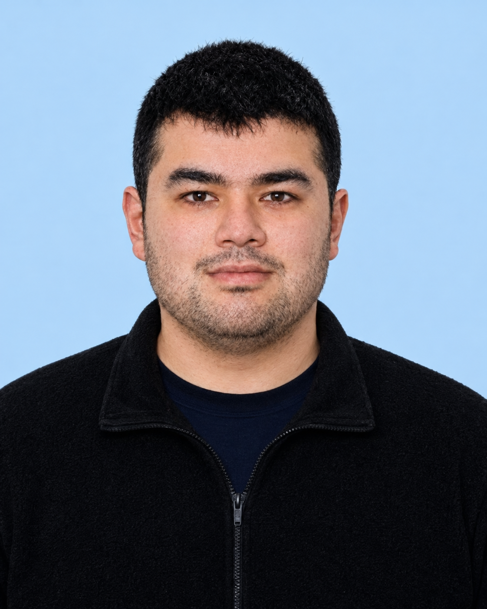

Yüksek Lisans
Amasya Üniversitesi
Elektrik-Elektronik Mühendisi
Amasya Üniversitesi · Yüksek Lisans Öğrencisi
Biyomedikal sinyallerden
öğrenen sistemlere.
Amasya Üniversitesi’nde yüksek lisans eğitimime devam ediyorum. Biyomedikal alanında beyin sinyalleri, yapay zekâ ve medikal görüntüleme üzerine çalışıyor; mühendislik bilgimi bu alanlarda geliştiriyorum.

Amasya Üniversitesi Mühendislik Fakültesi Elektrik-Elektronik Mühendisliği Bölümü mezunuyum. Yüksek lisans eğitimime Amasya Üniversitesi’nde devam ediyorum ve birinci sınıf öğrencisiyim.
Çalışmalarım beyin sinyallerinin incelenmesi ve yapay zekânın medikal görüntülemede kullanılması etrafında şekilleniyor. Biyomedikal cihazlar ve sistem tasarımı da ilgi duyduğum alanlar arasında.
Amasya Üniversitesi
Amasya Üniversitesi
Mühendislik Fakültesi
Biyomedikal alanında üzerinde çalıştığım ve kendimi geliştirdiğim başlıca konular.
Beyin sinyallerinin incelenmesi ve anlamlandırılması üzerine çalışıyorum. EEG verilerinin biyomedikal araştırmalarda değerlendirilmesiyle ilgileniyorum.
Yapay zekâ ve derin öğrenmenin biyomedikal alandaki uygulamaları üzerine çalışıyorum. Verilerden anlamlı bilgi elde etmeye yönelik yaklaşımlarla ilgileniyorum.
Tıbbi görüntülerin yapay zekâ ile incelenmesi üzerine çalışmalar yürütüyorum. Özellikle beyin görüntüleri ve damar yapılarının analiziyle ilgileniyorum.
Biyomedikal cihazlar ve ölçüm sistemleri ilgi alanlarım arasında. Elektronik ve yazılım bilgimi bu alanda geliştirmeyi hedefliyorum.
Biyomedikal alanındaki çalışmalar, fikir alışverişi ve olası iş birlikleri için benimle iletişime geçebilirsiniz.